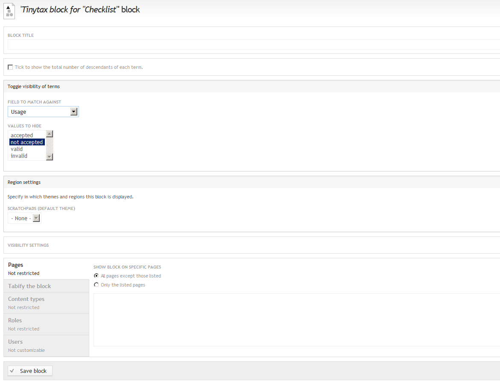

Filtering taxonomic terms¶
Introduction¶
You can use filters to temporarily ‘clean’ a classification from unwanted terms. Some biological classifications include a lot of synonyms, some times multiple times the volume of accepted names. You may want to allow for users to temporarily browse only through the accepted terms of a taxonomy. You can also allow the exclusion of terms based on the rank they belong or the unacceptability reason.
Instructions¶
While on the desired classification browsing page, click on the cog on the left top corner of the taxonomic tree
Select Configure block

Adjust the settings under the Toggle visibility of terms section as follows:
Select the Field to match against. E.g. select usage if you want to add a filter to exclude all not accepted terms
Select the Values to hide. E.g. select not accepted if you want to add a filter to exclude all not accepted terms
Click Save block
To enable or disable the filter:
- Go to the page with the classification
- On the top of the block you will see a tickbox stating Hide xxxxxx terms
- Select to enable or deselect to disable this filter